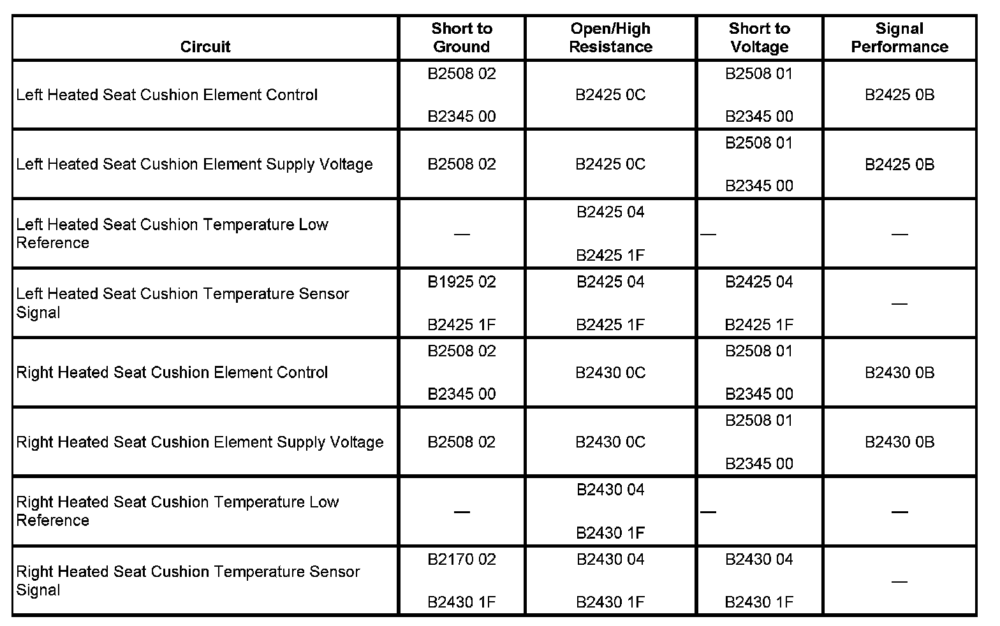

B2425
DTC B2425 OR B2430
DTC DESCRIPTOR
DTC B2425 04
Left Seat Cushion Heater Circuit Open
DTC B2425 0A
Left Seat Cushion Heater Circuit Rate of Change Below Threshold
DTC B2425 0B
Left Seat Cushion Heater Circuit Current Above Threshold
DTC B2425 0C
Left Seat Cushion Heater Circuit Current Below Threshold
DTC B2425 1F
Left Seat Cushion Heater Circuit Intermittent
DTC B2430 04
Right Seat Cushion Heater Circuit Open
DTC B2430 0A
Right Seat Cushion Heater Circuit Rate of Change Below Threshold
DTC B2430 0B
Right Seat Cushion Heater Circuit Current Above Threshold
DTC B2430 0C
Right Seat Cushion Heater Circuit Current Below Threshold
DTC B2430 1F
Right Seat Cushion Heater Circuit Intermittent
DIAGNOSTIC FAULT INFORMATION

Perform the Diagnostic System Check - Vehicle prior to using this diagnostic procedure. Initial Inspection and Diagnostic Overview
CIRCUIT/SYSTEM DESCRIPTION
When the heated seat function is active, the Memory Seat Module (MSM) or rear heated seat module supplies battery voltage through the element supply voltage circuit to the seat heater elements. The module controls the seat temperature by providing a pulse width modulation (PWM) ground through the heated seat element control circuit to the seat heater elements. The module then monitors the current flow through the heating element and the temperature sensor rate of change to verify correct operation.
CONDITIONS FOR RUNNING THE DTC
The MSM or rear heated seat module must be powered.
CONDITIONS FOR SETTING THE DTC
B2425/B2430 04
The module does not detect a temperature change within 210 seconds.
B2425/B2430 0A
The module detects that the set point temperature has not been reached within 8.5 minutes.
B2425/B2430 0B
By measuring output current, the module calculates that the heating element resistance is below the minimum resistance.
B2425/B2430 0C
By measuring output current, the module calculates that the heating element resistance is above the maximum resistance.
B2425/B2430 1F
The temperature sensor voltage is erratic or changes suddenly.
ACTION TAKEN WHEN THE DTC SETS
The heated seat cushion function for the affected seat will be disabled.
CONDITIONS FOR CLEARING THE DTC
- The current DTC clears when the malfunction is no longer present, and the power mode changes to OFF then back to ACC or RUN.
- The history DTC will clear after 50 consecutive fault-free ignition cycles have occurred.
CIRCUIT/SYSTEM TESTING
1. Ignition OFF, disconnect the MSM or rear head seat module connector C1, or C1 and C4 for front passenger.
2. Verify less than 15 ohms of resistance through the seat cushion heater element from the voltage supply circuit terminal to the low side drive control circuit terminal in the harness connector.
- If the resistance is greater than 15 ohms test the supply and control circuits for an open/high resistance. If the circuits test normal replace the seat cushion heater element.
3. Disconnect the MSM connectors C2 and C5, or the rear heated seat module connectors C2 and C4.
4. Verify the resistance through the seat cushion heat sensor is 850-300K ohms from the signal circuit terminal to the low reference circuit terminal in the harness connectors.
- If greater than 300K ohms, test the signal circuit and low reference circuit for an open/high resistance. If the circuits test normal, replace the seat cushion heater element.
- If less than 850 ohms, replace the seat cushion heater element.
5. Connect the MSM or rear heated seat module connectors.
6. Disconnect the seat cushion heater element connector.
7. Ignition ON, verify that the heat sensor signal circuit voltage from the MSM or rear heated seat module is not greater than 5 volts.
- If the signal circuit is greater than 5 volts test for a short to voltage. If the circuit tests normal replace the MSM or rear heated seat module.
8. If the circuits test normal replace the seat cushion heater element.
REPAIR INSTRUCTIONS
Perform the Diagnostic Repair Verification after completing the diagnostic procedure.
- Front Seat Cushion Heater Element Replacement
- Rear Seat Cushion Heater Replacement
- Control Module References for the MSM or rear heated seat module replacement, setup, and programming Verification Tests Programming and Relearning